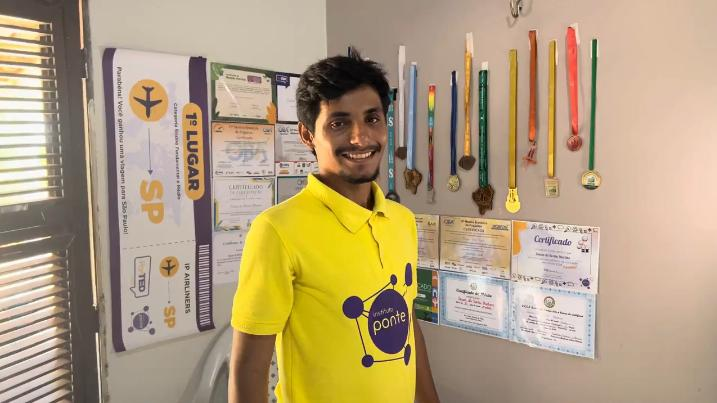
YouTube
Vídeo Biográfico produzido sobre minha trajetória
Assista ao conteúdo mais recente que destaca parte importante da minha trajetória.
Ver no YouTube ↗Olá! Eu sou Cauan Martins, um dev com vontade de criar algo grande.
Conheça mais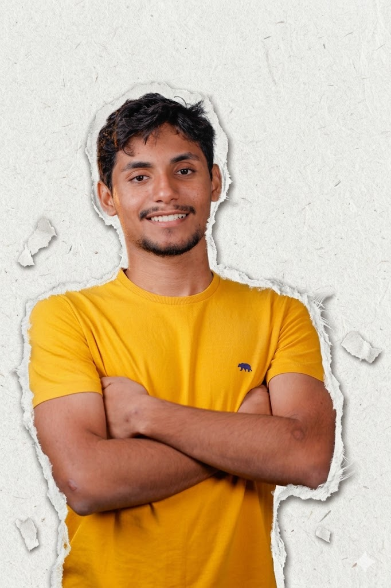
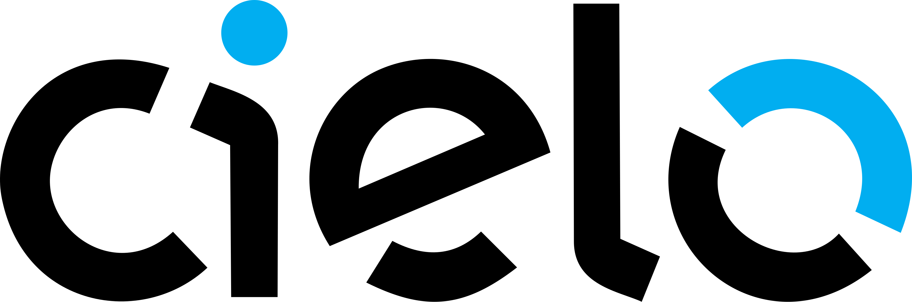
Projeto desenvolvido em parceria acadêmica com a CieloParticipei da construção do "Mestre de Vendas", um jogo digital single-player criado para transformar o processo de onboarding dos novos Gerentes de Negócios (GNs) da Cielo. O projeto surgiu do desafio de padronizar o treinamento em escala nacional, eliminando barreiras geográficas e a falta de realismo de métodos tradicionais, permitindo que os novos colaboradores pratiquem negociações em um ambiente seguro e imersivo.
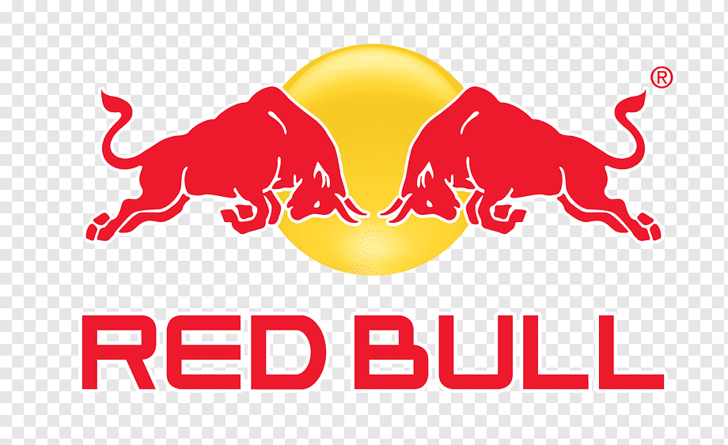
Projeto desenvolvido em parceria acadêmica com a Red BullParticipei do desenvolvimento do BullPace, uma solução web projetada em parceria com a Red Bull para digitalizar a operação do evento esportivo Red Bull 24 Horas. O projeto substitui o controle analógico de revezamento e quilometragem dos atletas (antes feito em pranchetas de papel) por uma interface para tablets intuitiva e tolerante a falhas. Na fase atual (Sprint 1), atuei no mapeamento de requisitos, análise de riscos e no desenho da arquitetura de software e wireframes, preparando a base para a automação de métricas de performance (pace) e exibição de resultados em tempo real.
Certificado de conclusão do curso de Engenharia de Software pela FIAP. O conteúdo abrangeu engenharia de requisitos, modelagem UML, arquitetura de software e práticas de qualidade, com foco em desenvolvimento de sistemas robustos e entregas colaborativas.
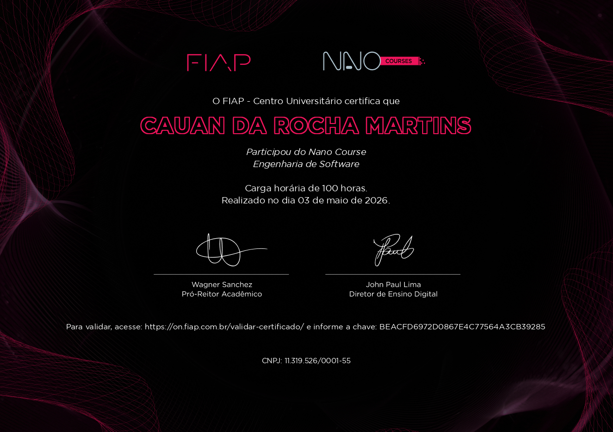
Certificado Foundations of CiberSecurity, com foco em fundamentos de segurança digital, análise de ameaças, proteção de dados e práticas para reduzir riscos em ambientes corporativos.
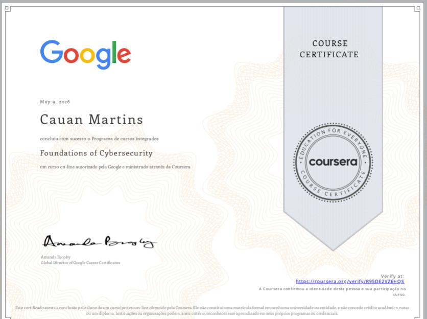
Destaques da minha trajetória em matérias e reportagens.

Assista ao conteúdo mais recente que destaca parte importante da minha trajetória.
Ver no YouTube ↗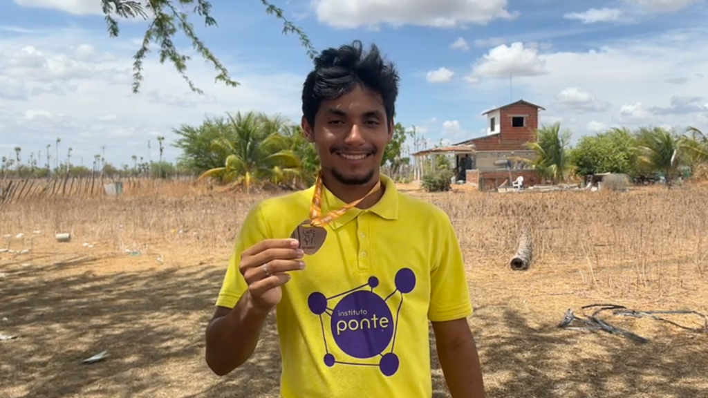
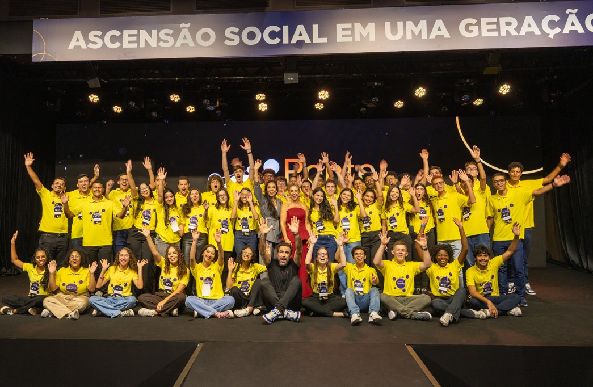
Cobertura do evento Ponte Day 2026 em São Paulo, celebrando resultados recordes.
Ler matéria completa ↗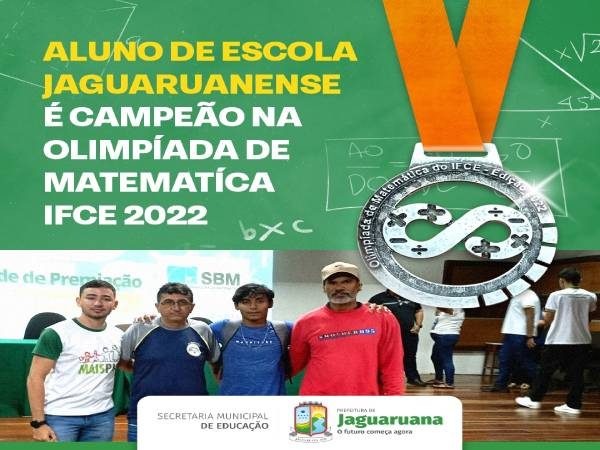
Reconhecimento da Prefeitura do Ceará pelo excelente desempenho e conquista de medalha em olimpíada de conhecimento.
Ler matéria completa ↗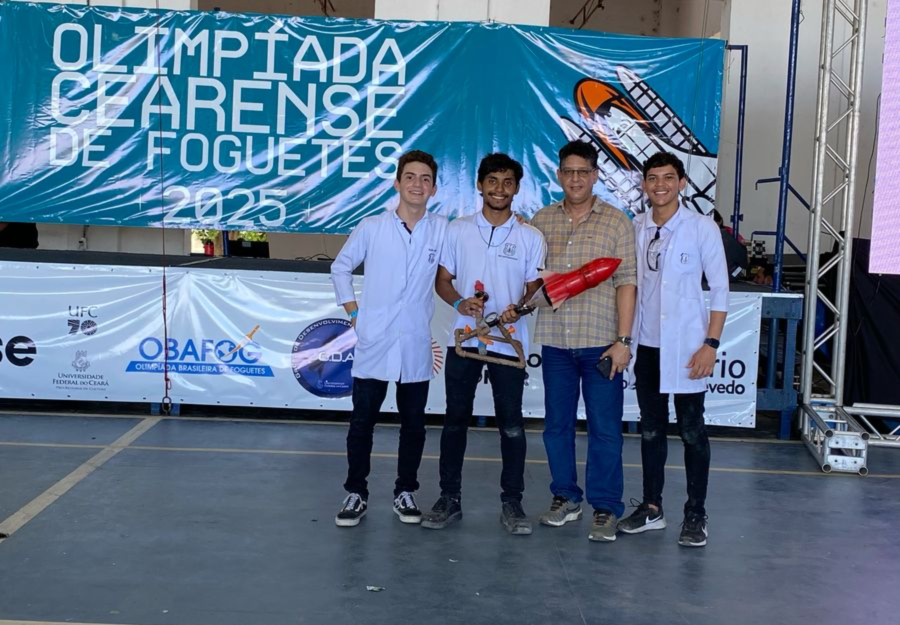
Matéria destacando a performance de excelência e dedicação acadêmica no Colégio 7 de Setembro.
Ler matéria completa ↗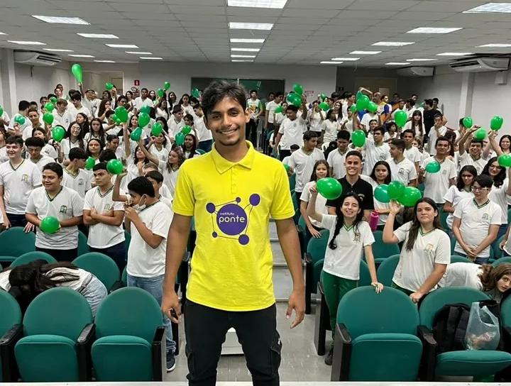
Homenagem e reconhecimento aos alunos da rede pública por seus méritos acadêmicos.
Ler matéria completa ↗Reportagem celebrando a conquista da medalha de ouro na Olimpíada Cearense de Foguetes (OCF).
Ler matéria completa ↗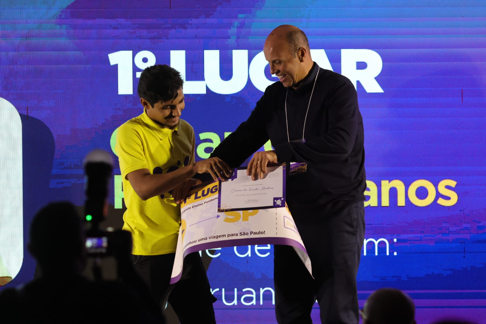
Assista ao vídeo que conta parte relevante da minha trajetória.
Ver no YouTube ↗Olá! Meu nome é Cauan Martins. Sou um profissional apaixonado por tecnologia e inovação, dedicado a criar soluções que agregam valor e transformam ideias em realidade.
Com experiência em desenvolvimento web, tenho uma forte base em HTML, CSS e JavaScript, e estou sempre em busca de aprender novas tecnologias e melhorar minhas habilidades.
Acredito na importância de criar interfaces intuitivas, acessíveis e de alta performance. Meu objetivo é contribuir para projetos desafiadores que façam diferença.